My research combines geochemical analyses, sediment characterization, field measurements, and geospatial surveys to investigate organic carbon cycling across riverine landscapes. These approaches help quantify carbon sources, transport, degradation, and preservation, while linking biogeochemical processes to sediment dynamics and landscape evolution.
Explore the methods
Elemental, isotopic, thermal, and microscale analyses help connect carbon composition to its transformation pathways and fate.
01 / Geochemistry
Elemental Analyzer (EA)
Organic Carbon and Nitrogen Contents
Elemental analyzers quantify carbon and nitrogen contents in sediment, soil, and organic matter through high-temperature combustion. I use these measurements to characterize organic carbon concentrations and C/N ratios in riverine suspended sediments, floodplain deposits, and reservoir sediments, providing essential constraints on organic carbon transport and composition.
02 / Geochemistry
Isotope Ratio Mass Spectrometry (IRMS)
Stable Carbon and Nitrogen Isotopes (δ¹³C and δ¹⁵N)
IRMS determines the stable carbon and nitrogen isotope compositions of organic materials. I use isotopic signatures to distinguish organic carbon sources, including vegetation-derived, aquatic, and petrogenic contributions, and investigate organic matter composition and alteration during river transport and deposition.
03 / Geochemistry
Mini Carbon Dating System (MICADAS)
Radiocarbon Analysis (¹⁴C)
MICADAS measures radiocarbon abundance to characterize the age and provenance of carbon-bearing materials. My radiocarbon work has been conducted primarily at LSCE, CEA, Université Paris-Saclay, where I operated ECHoMICADAS. I use radiocarbon measurements to distinguish modern and aged organic carbon, reconstruct floodplain depositional histories, and investigate carbon residence times and preservation over millennial timescales. My additional experience at NOSAMS includes work with graphite targets, the tube cracker–GIS interface, and the EA–GIS interface.
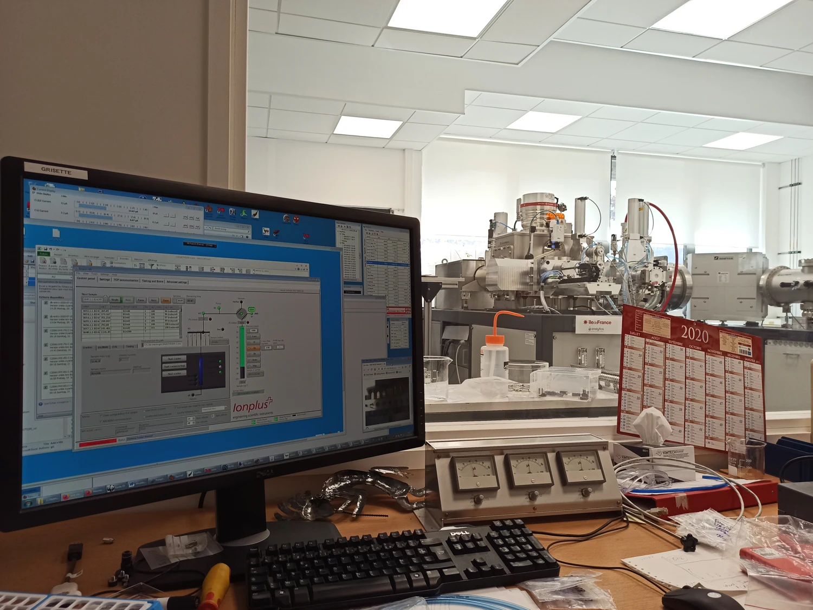
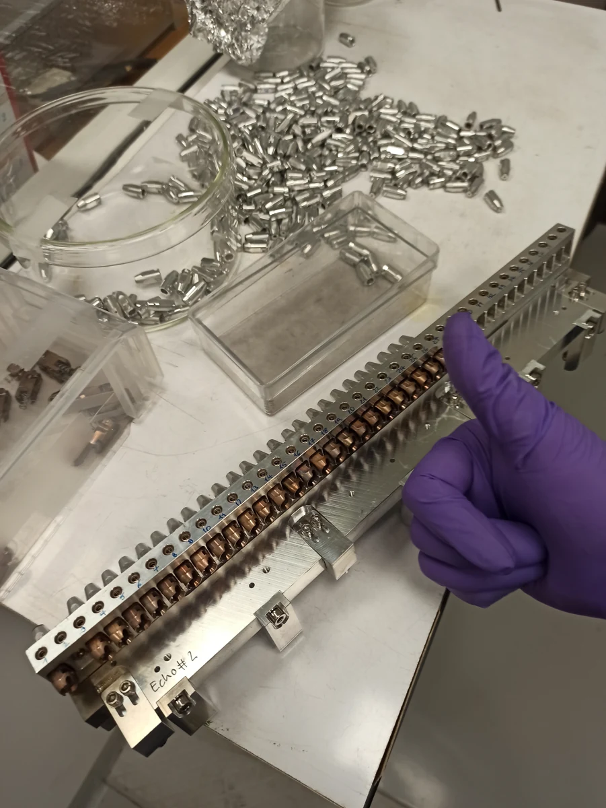
04 / Geochemistry
Ramped Pyrolysis/Oxidation (RPO)
Organic Carbon Thermal Reactivity and Activation Energy Distributions
RPO characterizes the thermal decomposition behavior of organic carbon by measuring carbon release during controlled heating. I carried out ramped pyrolysis (RP) at NOSAMS. I use thermograms and kinetic modeling to quantify the distribution of apparent activation energies and investigate the chemical heterogeneity and thermal reactivity of organic carbon in riverine sediments. Coupling these measurements with radiocarbon and stable isotope analyses provides stronger constraints on carbon composition and potential susceptibility to degradation.
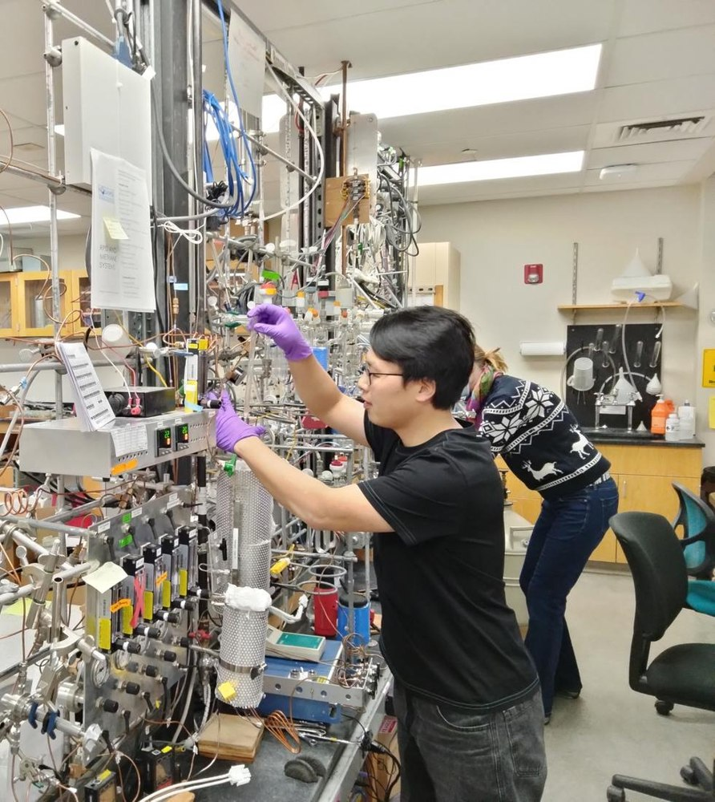
05 / Geochemistry
Dual-Inlet Isotope Ratio Mass Spectrometry (DI-IRMS)
Carbonate Carbon and Oxygen Isotopes (δ¹³C and δ¹⁸O)
Dual-inlet IRMS measures stable carbon and oxygen isotope compositions in carbonate minerals. I use these measurements to trace calcite within riverine particulate inorganic carbon (PIC), constrain its sources and formation, and investigate possible carbon-sink processes that remain poorly quantified. Establishing the net carbon balance requires isotope evidence to be combined with mineralogical, water-chemistry, and flux constraints.
06 / Geochemistry
X-ray Fluorescence Spectrometry (XRF)
Major and Minor Element Compositions
XRF determines the elemental composition of geological materials through characteristic X-ray emission. I use bulk sediment geochemistry to characterize sediment provenance, identify compositional differences among river deposits, and investigate changes in sediment sources and weathering signatures across river systems.
07 / Geochemistry
Inductively Coupled Plasma Mass Spectrometry (ICP-MS)
Minor and Trace Element Analysis
ICP-MS provides sensitive measurements of minor and trace element concentrations in geological and environmental samples. I primarily use these measurements to characterize inorganic elemental compositions and investigate sediment provenance and the redistribution of mineral-associated elements during river transport and deposition.
08 / Geochemistry
Scanning Electron Microscopy with Energy-Dispersive X-ray Spectroscopy (SEM–EDS)
Particle Morphology and Elemental Mapping
SEM provides high-resolution observations of sediment particle morphology and microstructure, while EDS characterizes elemental composition and spatial distributions. I use SEM–EDS to examine mineral particles, sediment aggregates, and mineral–organic associations, helping characterize particle-scale processes relevant to flocculation and organic carbon transport.
09 / Geochemistry
Nanoscale Secondary Ion Mass Spectrometry (NanoSIMS)
Nanoscale Elemental and Isotopic Mapping
NanoSIMS provides high-resolution maps of elemental and isotopic distributions within mineral and organic materials. I use this technique to examine the spatial association of organic carbon with mineral surfaces, providing insights into mineral–organic interactions and potential mechanisms of carbon stabilization.
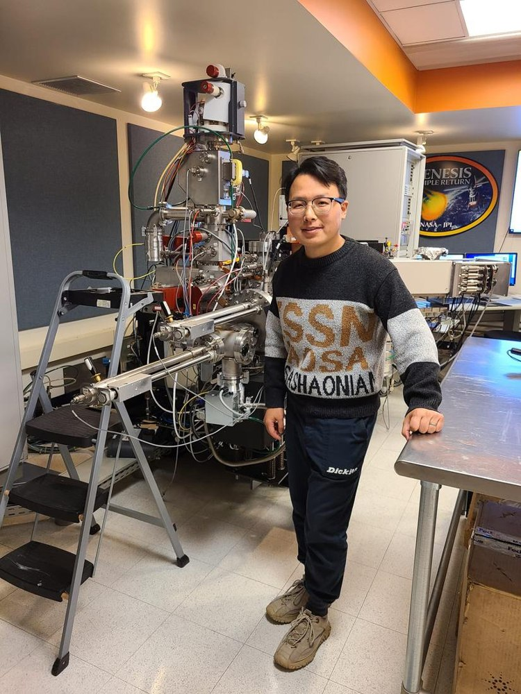
10 / Geochemistry
Raman Spectroscopy
Carbon Structure and Thermal Maturity
Raman spectroscopy characterizes the structural organization of carbonaceous materials through their vibrational spectra. I use Raman measurements to assess the structural ordering and thermal maturity of carbon particles, helping identify petrogenic organic carbon and investigate its contribution to riverine sediment carbon pools.
Physical measurements provide the sedimentary context for organic carbon transport and mineral–organic associations.
01 / Sediment properties
Laser Diffraction Particle Size Analyzers (Mastersizer 3000E / Coulter LS)
Sediment Grain Size Distributions
Laser diffraction instruments determine particle size distributions by measuring light scattering from dispersed particles. I use these measurements to characterize suspended and bed sediments and floodplain deposits, investigating grain size sorting, sediment transport, and relationships between sediment texture and organic carbon distribution.
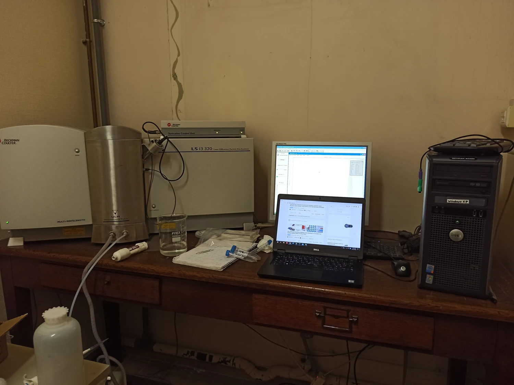
02 / Sediment properties
Brunauer–Emmett–Teller (BET) Surface Area Analysis
Mineral Specific Surface Area
BET analysis determines the specific surface area of sediment and mineral particles through gas adsorption. I combine these measurements with organic carbon contents to evaluate carbon loading per unit inorganic mineral surface area and investigate possible carbon losses or gains across different aquatic and depositional environments. These comparisons help assess how mineral surfaces influence organic carbon association and preservation.
01 / Field surveys
Unmanned Aerial Vehicle (UAV)
River Morphology and Floodplain Mapping
UAV surveys provide high-resolution aerial imagery for mapping river channels, floodplain surfaces, and exposed bank stratigraphy. I use UAV imagery to document sedimentary structures, characterize floodplain depositional environments, and investigate river migration and bank erosion in Arctic river corridors.
Yukon delta front from above
02 / Field surveys
Real-Time Kinematic GNSS (RTK-GNSS)
High-Precision Topographic and Water-Surface Surveys
RTK-GNSS provides centimeter-scale positioning under suitable survey conditions for topographic and hydrological measurements. I use RTK surveys to measure riverbank elevations, floodplain topography, and water-surface slopes, providing spatial constraints for interpreting river morphology and sediment transport.
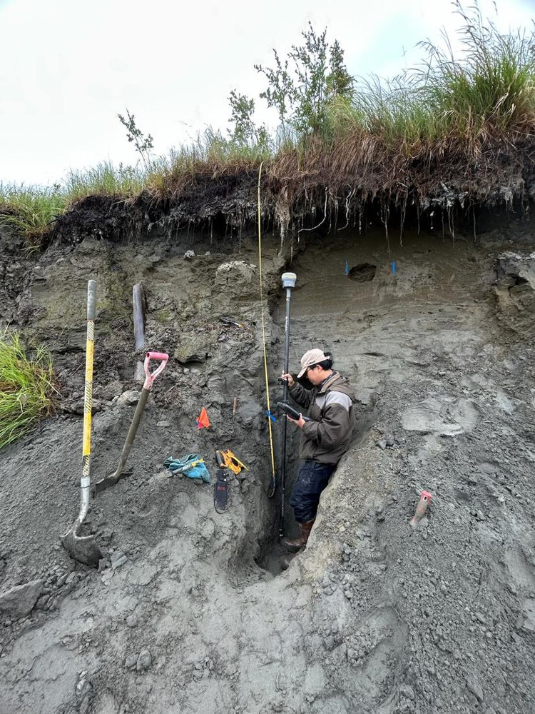
03 / Field surveys
Laser In Situ Scattering and Transmissometry (LISST)
In Situ Suspended Particle Size Distributions
LISST measures suspended particle size distributions and volume concentrations using laser diffraction directly in the water column. I use LISST profiles to characterize suspended sediment populations, investigate mud flocculation, and quantify variations in particle size with depth and hydrodynamic conditions in Arctic rivers.
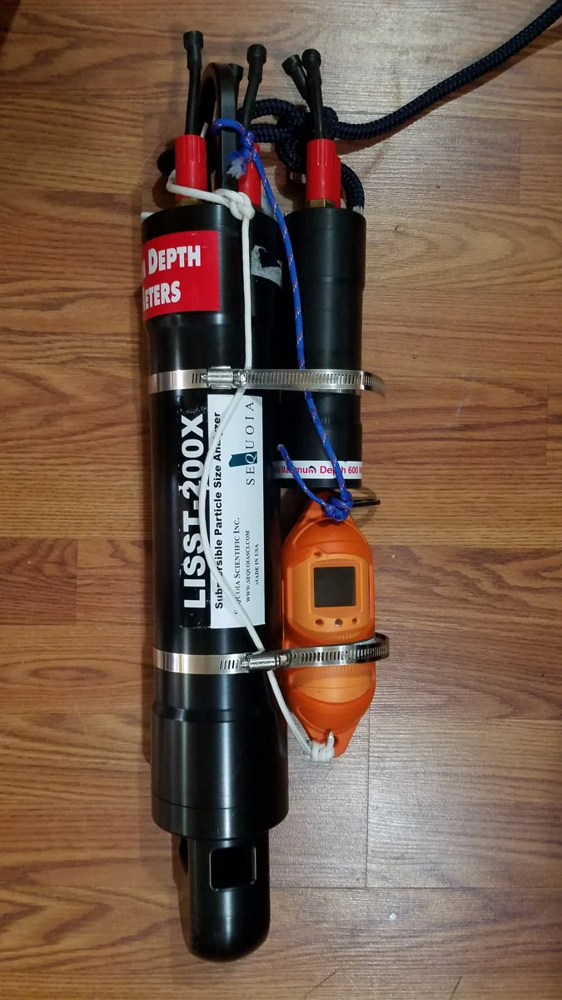
04 / Field surveys
Conductivity–Temperature–Depth Profiler (CTD)
River Water Physical Properties
CTD instruments measure conductivity, temperature, and pressure-derived depth to characterize water column conditions. I use CTD profiles alongside sediment measurements to investigate variations in water properties and their potential influence on suspended particle aggregation and transport.
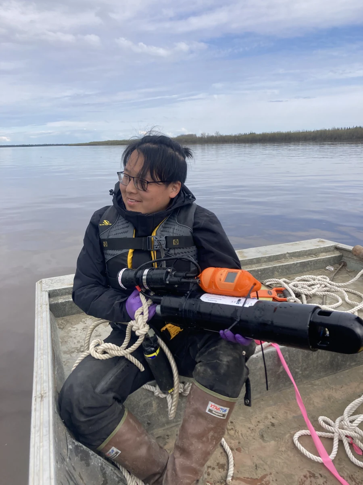
05 / Field surveys
Lowrance Sonar
River Bathymetry and Channel Geometry
Lowrance sonar uses acoustic measurements to determine water depth and characterize riverbed topography. I use sonar surveys to map channel cross-sections and bed geometry, providing information for interpreting river hydraulics, sediment transport, and depositional environments.
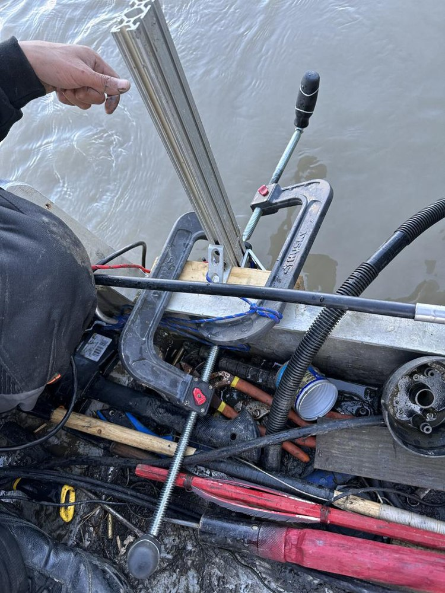
06 / Field surveys
Acoustic Doppler Current Profiler (ADCP)
River Velocity Profiles and Discharge
ADCP instruments measure water velocity profiles using the Doppler shift of acoustic signals and support river discharge calculations. I use ADCP measurements to characterize flow structure and quantify water discharge, which, combined with sediment and carbon concentration measurements, constrains suspended sediment and particulate organic carbon fluxes.
Fieldwork in motion
Boat-based survey and site-monitoring footage from my fieldwork.
Boat survey in the Yukon Delta
HOBO deployment
In situ measurements characterize environmental conditions and gaseous carbon exchange across river–floodplain environments.
01 / Water chemistry & gas fluxes
Portable pH Meter
Water Acidity and Geochemical Conditions
Portable pH meters measure the acidity or basicity of natural waters and experimental solutions. I use pH measurements to characterize river water chemistry and investigate geochemical changes associated with mineral weathering and sediment–water interactions.
02 / Water chemistry & gas fluxes
YSI Multiparameter Water Quality Sonde
River Water Quality Measurements
YSI sondes measure multiple water quality parameters, including temperature, pH, conductivity, dissolved oxygen, and turbidity, depending on sensor configuration. I use these measurements to characterize river water conditions and investigate environmental variations associated with sediment transport and biogeochemical processes.
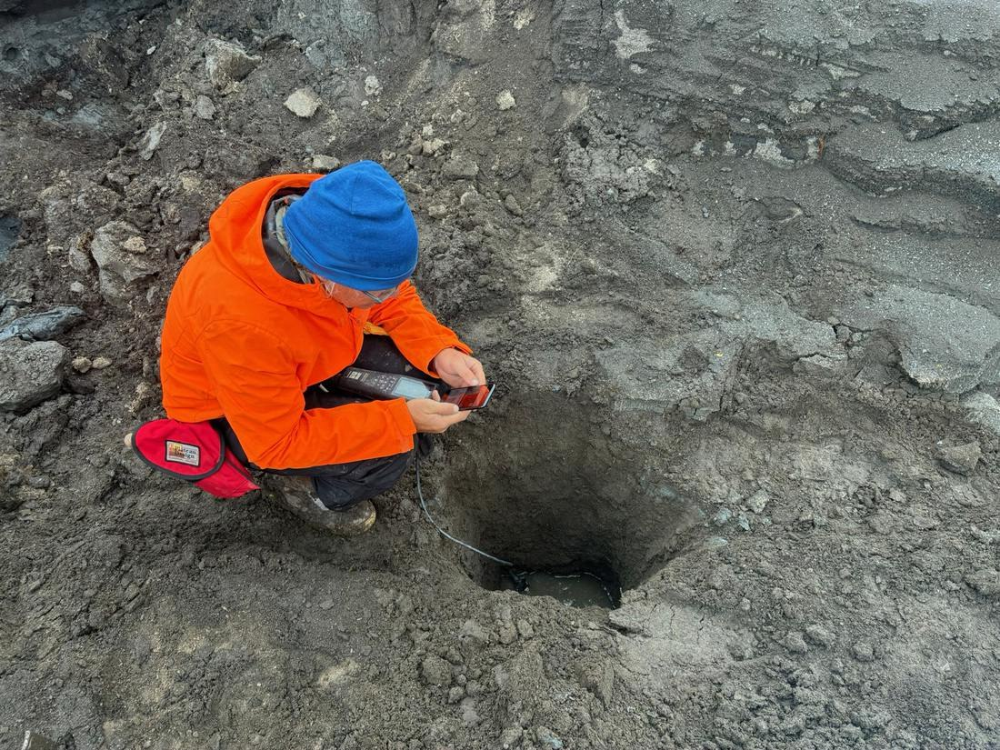
03 / Water chemistry & gas fluxes
LI-COR Gas Flux Measurement Systems
Terrestrial and Aquatic CO₂ Exchange
LI-COR gas analyzers coupled with chamber systems quantify gas exchange between environmental surfaces and the atmosphere. I use smart chambers for terrestrial measurements and floating chambers for river surfaces to investigate CO₂ fluxes across river–floodplain environments and evaluate gaseous carbon exchange alongside sedimentary carbon transport and storage.
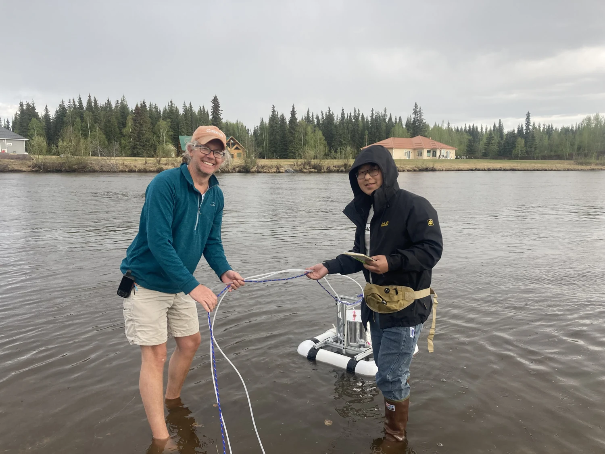
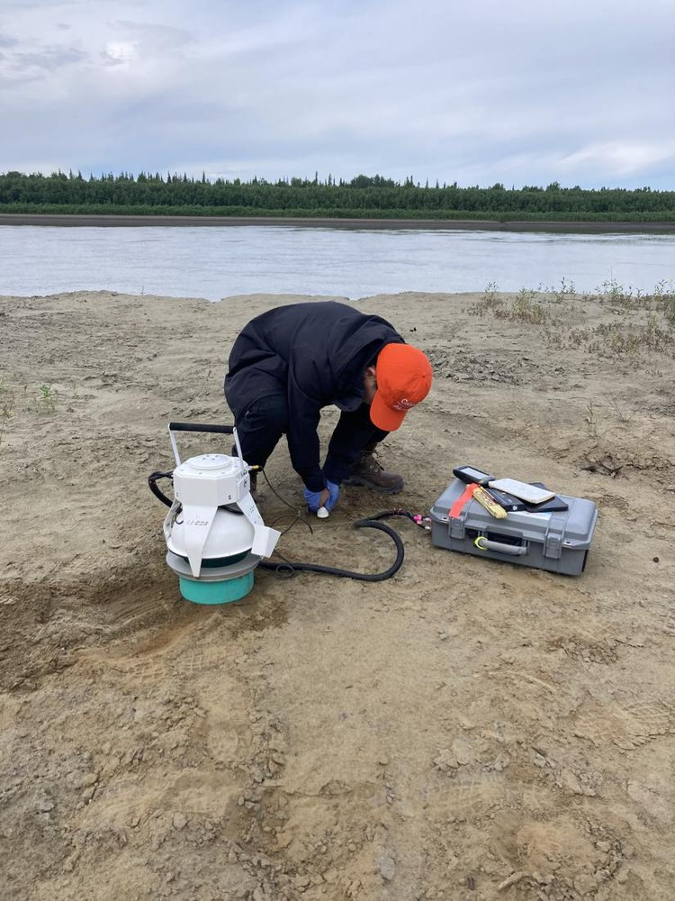
Terrestrial LI-COR measurements
Samples from connected river and floodplain environments provide material for physical, geochemical, and isotopic measurements.
Sampling from the river
Travelling by boat through the Yukon Delta during fieldwork.
01 / Sampling
River Water Sampling
Dissolved Carbon, Isotopes, and Water Chemistry
I collect river water samples for measurements of dissolved organic carbon (DOC), water isotopes, major cations and anions, mercury, and other dissolved constituents. These analyses characterize dissolved carbon and solute transport, investigate chemical weathering, and provide geochemical constraints on carbon cycling across river systems.
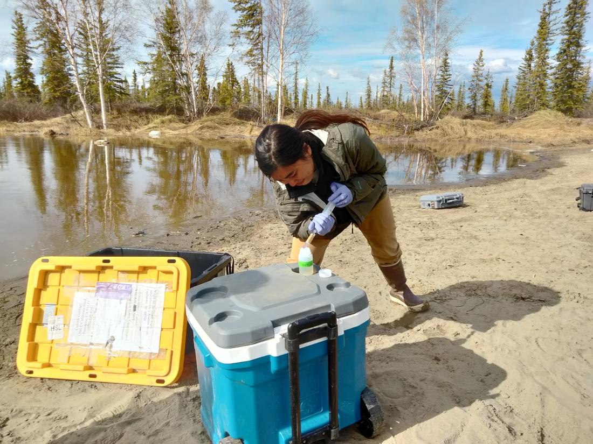
02 / Sampling
Suspended Sediment Sampling (Van Dorn Sampler)
Depth-Resolved Suspended Sediment Collection
Van Dorn samplers collect discrete water samples at selected depths, allowing suspended sediment to be recovered from different positions within the water column. I use depth-resolved sampling to measure suspended sediment concentrations, grain size distributions, organic carbon contents, and isotopic compositions. These measurements capture heterogeneity in particulate organic carbon and help investigate the roles of grain-size sorting, mineral–organic interactions, and source mixing during river transport.
Depth-profile sampling
03 / Sampling
Riverbed Sediment Sampling (Ponar Grab Sampler)
Bed Sediment Collection
Ponar grab samplers collect sediment from the riverbed for physical and geochemical characterization. I use bed sediment samples to investigate grain size, organic carbon composition, and sediment geochemistry, helping characterize sediment deposition and exchanges between suspended and bed sediment reservoirs. Submerged logs can snag the sampler: we lost two Ponar samplers this way in the Yukon River.
04 / Sampling
Riverbank and Floodplain Sediment Sampling
Stratigraphy, Carbon Stocks, and Depositional Histories
I collect sediment samples from exposed riverbanks and floodplain deposits across stratigraphic sequences and geomorphic units, including lateral-accretion deposits, overbank sediments, and oxbow deposits. Measurements of grain size, bulk density, organic carbon concentration, and radiocarbon age allow me to reconstruct depositional histories, quantify floodplain carbon stocks, and investigate long-term organic carbon preservation.
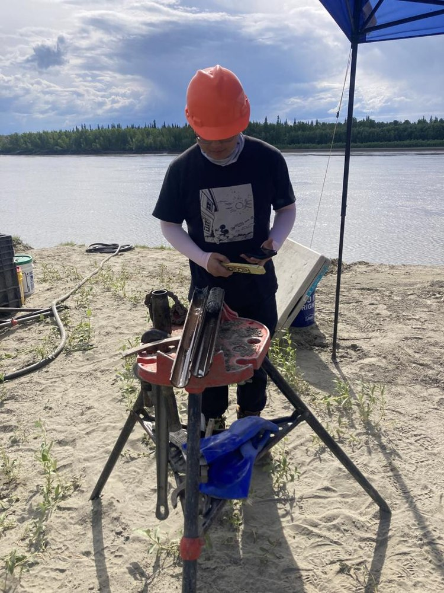
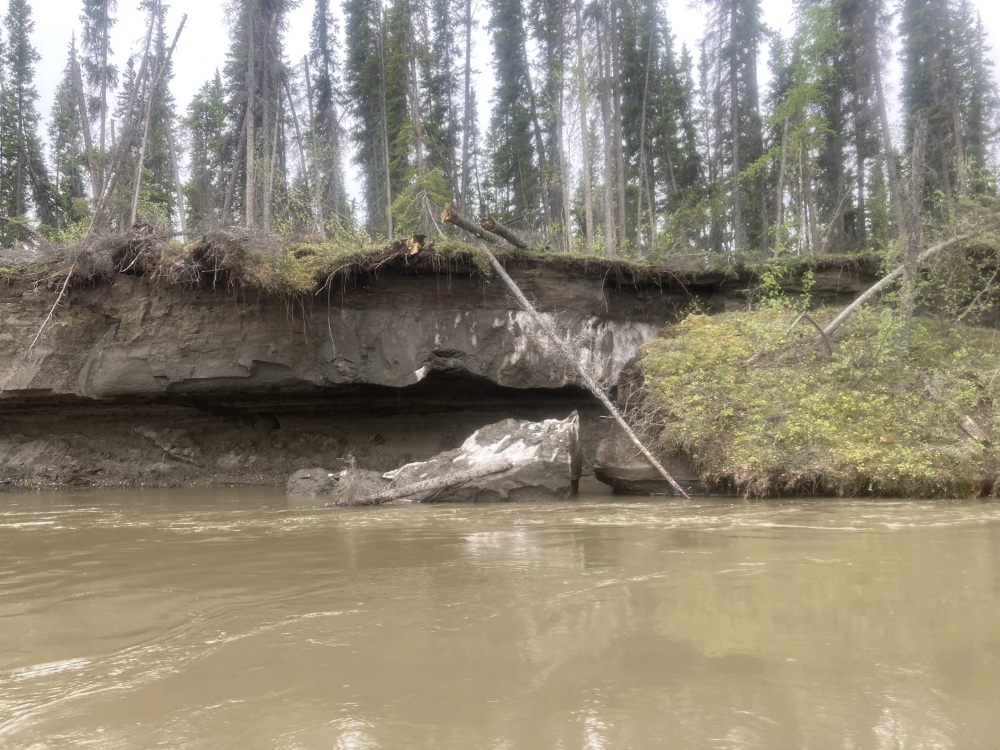
Exposed riverbank and floodplain stratigraphy
05 / Sampling
Sediment Porewater Sampling (Rhizon Samplers)
Porewater Geochemistry
Rhizon samplers use suction to collect filtered porewater through a porous polymer membrane from sediments and soils with relatively little disturbance.